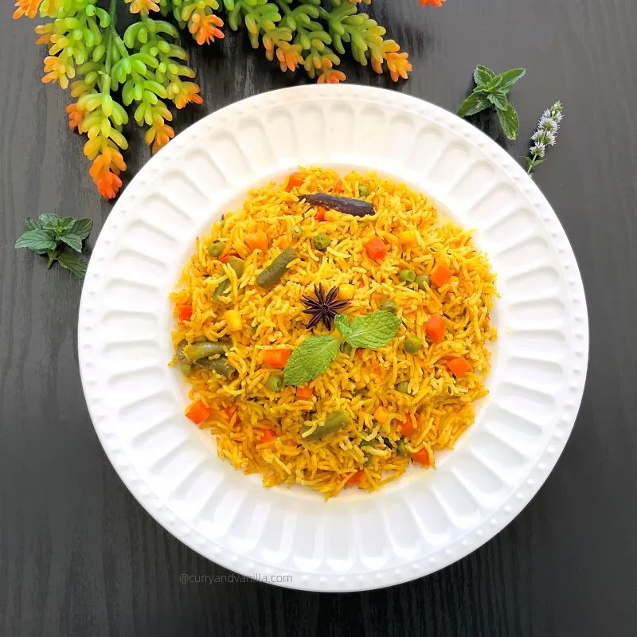

Explore Satvik Recipes
Wholesome, light and pure recipes for your daily balance.
All
Breakfast
Lunch
Dinner
Snacks
Moong Dal Khichdi
A light and comforting Satvik meal made with yellow lentils and rice.
View Recipe

Satvik Pulao
Fragrant rice cooked with seasonal vegetables and mild spices.
View Recipe
Fruit & Nut Bowl
Naturally sweet energy booster with banana, apple, and soaked almonds.
View Recipe